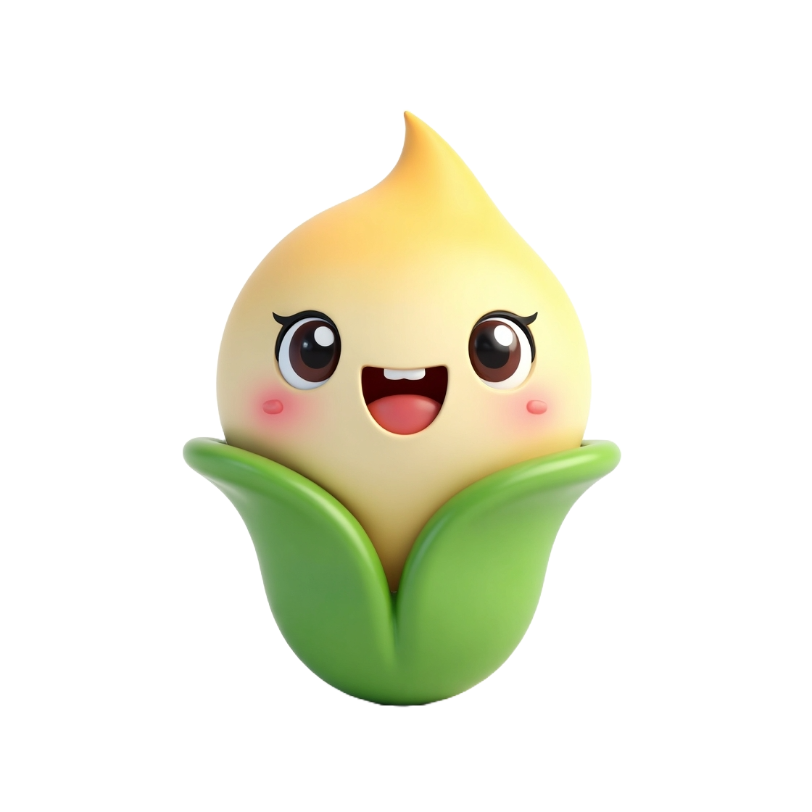

🌱 My Virtual Plant
Because every little leaf deserves love 🍃
You're about to adopt a tiny plant. She needs your love, attention, and kindness to grow healthy and
happy.
Are you ready to be the best plant parent? 🌸

🌼 How to take care of your plant
- 💧 Water it gently to keep it hydrated and fresh.
- ☀️ Give it sunshine to help it grow stronger every day.
- 🌿 Fertilize it with care to boost its development.
- 🗣️ Talk kindly to it — kind words make plants happy too!
- ✨ Every time you take care of your plant, you earn points!
- 🌱 After 3 loving interactions, your plant evolves to the next stage.
- 🏅 You'll unlock badges as rewards for your dedication and care.
- 📦 Your progress is saved, so you can come back anytime and continue nurturing your plant.
- 🌸 The goal is to raise your plant from a tiny seed into a flourishing bloom filled with life
and joy.
- 💖 Be consistent, be kind, and enjoy this peaceful journey of growth!
Start caring 🌿